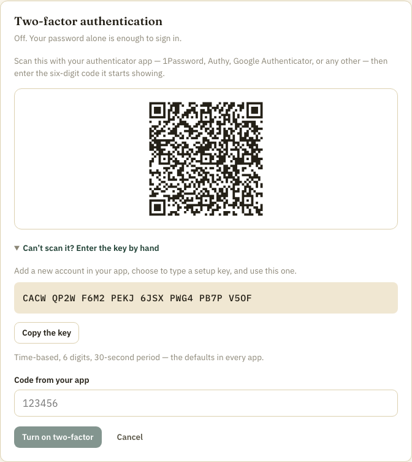
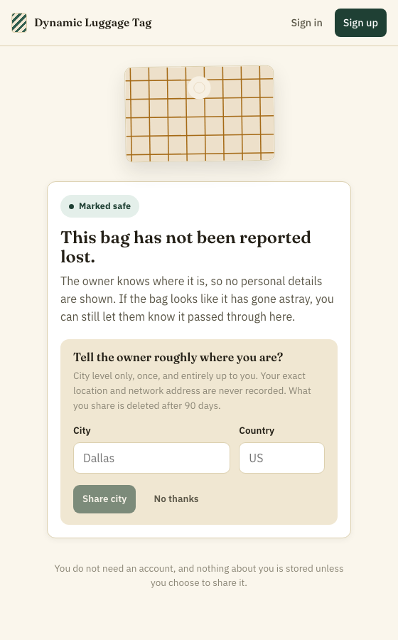
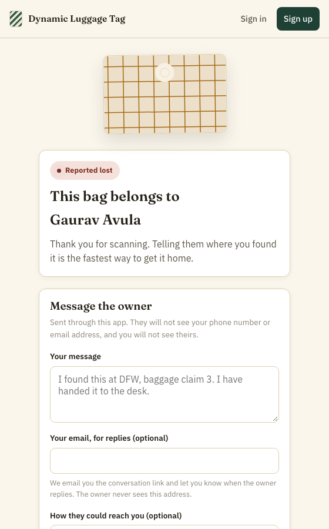
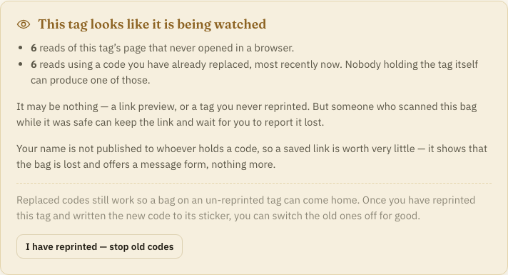
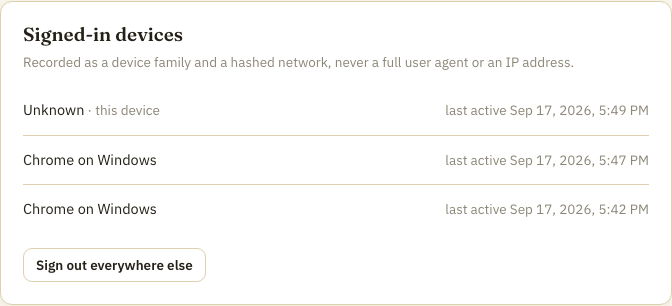
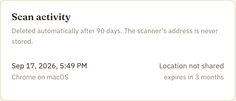

security · privacy · api
Security and privacy analysis
A review of what this application protects, how it protects it, and where it falls short. Written to be checkable: every claim below points at the code that implements it, and the weaknesses are stated as plainly as the strengths.
§Scope & method
This covers the application in this repository: the Flask API under
api/, the React client under web/, and the
deployment shape described in self-hosting.md.
It does not cover the host operating system, the TLS terminator you put in
front of it, your database backups, or the physical security of a printed
tag.
The method was a read of every module under api/app/security/,
api/app/api/ and api/app/services/, followed by
behavioural checks against a running instance — response headers taken off
the wire, a TOTP code replayed, the Server header compared
between the development server and gunicorn. Where a finding below is
behavioural, the evidence is reproduced verbatim.
§Findings at a glance
| id | finding | area | severity |
|---|---|---|---|
| F-1 | A TOTP code can be replayed inside its validity window | Authentication | Low |
| F-2 | Rate limiting defaults to per-process memory | API | Medium |
| F-3 | A misconfigured proxy-hop count silently collapses per-client limits | API | Medium |
| F-4 | Every page load discloses the visitor to Google Fonts | Privacy | Low |
| F-5 | One recovery-code attempt costs ten Argon2 verifications | Authentication | Low |
| F-6 | The client CSP permits inline styles | Client | Low |
| F-7 | Server masking has no effect under gunicorn | API | Info |
| F-8 | Rate-limit headers publish the limit configuration | API | Info |
| F-9 | The audit trail does not cover every decryption the README claims | Privacy | Low |
Nothing in this list undermines the product's central privacy claim: that a stranger who scans a bag learns nothing about its owner until the owner decides otherwise. That mechanism is examined in §5 and holds.
§Threat model
The design answers to five adversaries, in roughly the order it takes them seriously.
| adversary | wants | principal defence |
|---|---|---|
| A stranger holding the bag | Name, address, phone — the classic luggage-tag exposure | Nothing personal is served until the owner marks the bag lost, and the address never at all |
| Someone who photographs a tag | To track the bag, or reach the owner later | The QR carries a random 256-bit token and nothing else; the owner can rotate it |
| Someone who keeps the link | To be told when the owner is away and has lost a bag, and to be handed their name at that moment | The name is released per conversation, not published to whoever holds a code; retired codes never release it at all |
| Whoever obtains a database dump | Bulk personal data | Per-user envelope encryption; without the environment's key the dump is inert |
| A credential-stuffing bot | Accounts | Argon2id, lockout, enumeration-resistant responses, rate limits, optional Turnstile |
| The operator | (assumed honest, but should be able to prove it) | Audit log of every decryption; retention windows; crypto-shredding on deletion |
The model explicitly does not defend against an attacker who holds both the database and the process environment at the same time. That is the line the whole encryption design is drawn around, and it is stated honestly in the code rather than glossed over.
§ 1Data at rest
Envelope encryption, per user
Each user row carries its own 256-bit data-encryption key (DEK). The DEK is stored wrapped by a key-encryption key (KEK) that lives only in the process environment. Personal fields are sealed with the DEK using AES-256-GCM.
The consequence worth stating plainly: a stolen database is not a breach of personal data on its own. It is a pile of ciphertext with no key in it.
Ciphertext is pinned to its own row and column
Every field is sealed with associated data naming exactly where it lives. Moving a ciphertext — pasting a victim's encrypted phone number into the attacker's own row so the application decrypts it for them — fails authentication rather than succeeding.
api/app/security/crypto.pydef field_aad(table: str, column: str, row_id: object) -> bytes:
"""Associated data pinning a ciphertext to one column of one row."""
return f"{table}:{column}:{row_id}".encode()
This is enforced structurally rather than by convention: call sites never
touch a key or build their own associated data, because
UserCrypto in api/app/security/pii.py is the only
way in, and it derives the AAD itself. A developer cannot forget it.
Deletion that holds
Account deletion overwrites the wrapped DEK before removing the rows. Any ciphertext surviving in a backup is permanently unreadable — there is no key anywhere that opens it.
api/app/services/accounts.pydef crypto_shred(db: OrmSession, user: User) -> None:
"""Destroys the user's key material, then the rows themselves."""
user.dek_wrapped = b"\x00" * 32
user.email_enc = b""
...
# Free the unique index so the address can be used to register again.
user.email_bidx = crypto.new_key()
user.deleted_at = utcnow()
db.flush()
db.delete(user)Note the blind index is replaced with random bytes rather than nulled. That releases the address for re-registration without leaving a value that could be tested against.
Looking up an encrypted column
Sign-in has to find an account by email address, and the address is encrypted. The lookup uses a keyed HMAC — a blind index — so the database holds no plaintext address and an attacker without the index key cannot test guesses offline.
api/app/security/crypto.pydef blind_index(key: bytes, namespace: str, value: str) -> bytes:
"""Deterministic, keyed index for equality lookups on encrypted columns.
Keyed so an attacker holding the database cannot test guesses offline, and
namespaced so the same value in two columns produces two different indexes.
"""
message = f"{namespace}\x00{value}".encode()
return hmac.new(key, message, hashlib.sha256).digest()The residual property of any blind index is that equal plaintexts produce equal indexes: someone holding the database can see that two rows share an address, without learning it. For an email column, where uniqueness is already enforced and visible, that leaks nothing extra.
Key rotation
Keyring holds every KEK version, so rows wrapped under an old
key stay readable while flask crypto rewrap moves them
forward. A rotation is therefore not an outage, which is the main reason
rotations get skipped in practice.
§ 2Authentication
Password storage
Argon2id, with cost parameters from configuration (default: 64 MiB,
3 iterations, parallelism 2). Hashes carry their own parameters, and
needs_rehash upgrades a user's hash transparently at their
next sign-in — so raising the cost does not strand existing accounts.
Enumeration resistance
Registration, sign-in and password reset are all designed not to answer "does this address have an account?". Three separate mechanisms:
- In the body. An unknown address, a wrong password and a locked account all return the same
invalid_credentialsmessage. - In the timing. An unknown address still pays for an Argon2 verification against a dummy hash, so latency does not distinguish the cases.
- In registration. Registering an address that already exists returns the identical
202. What differs is the email sent — and that only reaches the person entitled to know.
if user is None:
# Spend the same time an existing account would, so response latency
# does not answer "does this address have an account?".
dummy_verify(hasher)
audit.record(db, audit.LOGIN_FAILED, config=config,
actor_type="anonymous", detail={"reason": "unknown_account"})
db.commit()
raise _invalid_credentials()One subtlety handled correctly: re-registering an unverified address re-sends the verification link but deliberately does not update the stored password. Anyone can type an address they do not own; overwriting the password there would hand them the account the moment the real owner clicked the link in their own inbox.
Two-factor
TOTP, enrolled by scanning a QR code. The secret is written on setup but
totp_enabled_at stays null until a code proves the
authenticator actually holds it — so a mistyped or abandoned setup cannot
lock anyone out.

data: URI, never served from a URL of its own —
a URI containing the shared secret would otherwise land in an access log,
a browser history entry and a referrer header.
Ten single-use recovery codes are issued on enable and shown exactly once. They are stored as Argon2 hashes rather than HMACs, correctly: at roughly 48 bits they are short enough that a database leak would otherwise make them brute-forceable.
Codes are verified with one step of drift either way, which covers clock skew. See F-1 for the replay window this leaves open.
Lockout
Eight failed attempts locks an account for fifteen minutes, and a failed second factor counts toward the same budget. A locked account returns the same message as a wrong password, so the lockout itself is not an oracle.
§ 3Sessions and CSRF
Server-side sessions, not tokens
The cookie is an opaque random string; authority lives in a database row. This is the right call and the code says why: a self-contained signed token cannot be revoked before it expires, which makes "sign out everywhere", "sign out after a password change" and "this device was stolen" impossible to honour.
Only an HMAC of the token is stored, so a database dump yields no usable cookies. Sessions carry both an idle window and an absolute expiry, and concurrent sessions per user are capped.
Cookie flags
Over HTTPS the session cookie is issued as
__Host-dlt_session: HttpOnly,
Secure, SameSite=Strict, Path=/,
no Domain. The __Host- prefix is what stops a
sibling subdomain setting or shadowing it — a defence that plain
Secure does not provide.
Three independent CSRF defences
The module is explicit that each layer has a known failure mode, which is why there are three:
SameSite=Strict— the browser does not attach the cookie cross-site at all. Strong, but only as good as the browser.- Origin check — rejects a cross-origin request even if a cookie did arrive. Fails open on clients that omit
Origin, so it falls back toRefererand refuses when neither is present. - Double-submit token — the request must echo a value only same-origin script could have read.
Ordering is correct: CSRF is verified only once a session is known, because a request with no session carries no ambient authority to forge against. Public endpoints — a scan page, a finder's message — are exempt by design and rate-limited instead.
§ 4API security
Authorisation, and the 404 that should be a 403
Every owner-scoped fetch goes through one helper that filters by owner in
the query itself, rather than fetching and then checking. A tag belonging
to someone else returns 404, not 403 — on
purpose:
def owned_tag(tag_id: uuid.UUID | str) -> Tag:
"""Fetches a tag that belongs to the signed-in user.
A tag owned by someone else returns 404 rather than 403: telling a caller
that an id exists but is not theirs confirms the id, which is an
enumeration oracle over every tag in the system.
"""Input validation
Every endpoint parses its body through a Pydantic model with
extra="forbid", whitespace stripping and an explicit
max_length on every string. Forbidding unknown keys is what
closes mass-assignment: a request cannot smuggle a field the endpoint did
not intend to accept. Request bodies are capped at 64 KiB.
Values that reach a renderer are constrained to fixed lists rather than accepted as free text — the bag icon and its colour are enum names, not an arbitrary string and a hex colour, precisely because one of them is drawn into a PDF.
Response headers
Taken off a running instance:
content-security-policy: default-src 'none'; img-src 'self' data:; style-src 'none';
script-src 'none'; frame-ancestors 'none'; form-action 'none'; base-uri 'none'; sandbox
x-content-type-options: nosniff
x-frame-options: DENY
referrer-policy: no-referrer
permissions-policy: accelerometer=(), autoplay=(), camera=(), geolocation=(), ...
cross-origin-opener-policy: same-origin
cross-origin-resource-policy: same-site
cache-control: no-store, private
The API returns JSON, images and PDFs, never HTML that runs script, so the
policy denies essentially everything as a backstop. no-store
on every response matters more than it looks: these responses carry
decrypted personal data, and none of it may be held by a shared cache.
sandbox directive above sets every sandbox flag, including the
one that forbids downloads — which made browsers refuse to save the print
PDF or render the QR symbol at all. Files meant to be opened or saved now
receive sandbox allow-downloads and keep the rest of the
policy. It is noted here because it is the clearest example in this
codebase of a hardening measure that was strictly too strong and broke a
feature silently.
CORS
A single configured origin, with credentials. No wildcard, no
reflected-origin fallback: an unlisted origin simply receives no CORS
headers. Vary: Origin is added unconditionally, including when
no grant is issued — without that, a cache could serve an allowed response
to a different origin.
Rate limiting
Applied per endpoint at limits that reflect what each is worth to an attacker: 5 registrations an hour, 10 sign-ins per quarter hour, 10 token rotations an hour. See F-2 and F-3 for two ways this becomes weaker than it reads.
Bot mitigation
Cloudflare Turnstile guards registration, sign-in, password reset and the finder's message form. Two decisions are worth endorsing: the client IP is not forwarded in the verification call, and verification fails closed — if Cloudflare cannot be reached the request is refused. The protected actions are exactly the ones an attacker would push through during an outage.
Turnstile is also correctly bound to an action, so a token solved on the sign-in page cannot be replayed against registration. It is disabled entirely when unconfigured, which keeps self-hosting free of a Cloudflare dependency.
§ 5The public surface
This is the part of the system a stranger can reach, and the part the product exists to get right. The test is simple: scan a tag and see what comes back.


Disclosure is decided server-side from the tag's current state, per field. The client is never sent data it is expected not to display — the common failure mode where a determined user reads the JSON and finds everything.
Reading a page has no side effects
Loading the scan page is a plain GET. Recording the scan is a
separate POST the page makes after it renders, which keeps
link-preview bots and browser prefetches out of the owner's scan history
and inbox. Repeat scans from the same coarse network within a window are
deduplicated.
The masked relay
A finder can message the owner without either side learning the other's address. The finder holds a relay token; the owner sees a thread. An optional finder email — used only to send them the conversation link — is encrypted and never shown to the owner, which is a distinction the code is careful about: it exists so the finder can follow the thread, not so the owner can reach them.
Scan tokens are bearer credentials
Anyone who photographs a tag can open its page. That is inherent to a
printed QR code and cannot be designed away. It is mitigated rather than
solved: the token is 256 random bits, it identifies a row and nothing else,
Referrer-Policy: no-referrer keeps it out of onward requests,
and the page is noindex.
The watcher who waits
The sharpest consequence of a token with no expiry is not that it can be photographed — it is that it can be kept. Someone who handles a bag for a moment, a porter or a neighbour on a carousel, can scan it while it is marked safe, learn nothing at the time, and save the URL. Polling it costs nothing. When the owner reports the bag lost, that watcher is handed the owner's name and told, in effect, that this person is away from home and has just lost a bag.
So the defence is not to identify the watcher but to make the moment worthless. A finder does not need the owner's name to return a bag — they need a channel, and the relay already provides one without ever showing the owner's name. The name is therefore released per conversation rather than published to whoever presents a code:
api/app/api/scan.py# `always` is the only setting that puts a name in front of whoever
# presents a code. `on_reply` holds it back until the owner answers a
# specific person in the relay, which is the setting that makes a saved
# URL worthless to someone who is not holding the bag.
#
# A retired code never gets the name, at any setting: it cannot be told
# apart from a link saved before the bag was ever reported lost.
if tag.name_disclosure == NAME_ALWAYS and not retired:A bot polling a saved URL now sees that the bag is reported lost and a message form. That is all it ever sees.
Rotation that costs nothing
Rotating a code used to invalidate it outright, which made rotation something owners put off: the code is printed on the tag and written into an NFC sticker, and killing it strands the bag until both are redone. So a retired code is now kept and goes on resolving in a reduced mode — the finder is told the bag is lost and can message the owner, but no name is released, whatever the setting says. A bag on an un-reprinted tag still comes home; a watcher's saved copy is permanently demoted. An owner who has reprinted can switch the old codes off entirely.
Watching is visible without identifying anyone
Two counters, neither of which describes a caller. Every read of the scan
endpoint increments page_fetch_count; only a browser that
rendered the page and said so increments scan_count. A script
on a timer moves the first and not the second. Separately, a read carrying
a code the tag has already replaced is counted on its own — nobody holding
the printed tag can produce one.

§ 6Privacy
Addresses are never stored
Rate limiting and scan deduplication need to recognise "the same client again". Storing IPs would turn the scan log into a location history of whoever handled the bag. Instead: truncate, then keyed-hash, salted per UTC day.
api/app/security/privacy.pydef hash_ip(pepper: bytes, ip: str | None, *, day: dt.date | None = None) -> bytes | None:
"""Keyed, day-salted hash of a truncated client address.
The salt rolls at UTC midnight, so yesterday's hashes cannot be matched
against today's — the value stops being a correlation handle on its own.
"""
day = day or dt.datetime.now(dt.UTC).date()
message = f"ip\x00{day.isoformat()}\x00{_truncate_ip(ip)}".encode()
return hmac.new(pepper, message, hashlib.sha256).digest()
Truncating before hashing is the part that matters. Hashing alone
would still permit a dictionary attack over the whole IPv4 space; a
recovered preimage here names a /24, not a household. Rolling
the salt daily then caps how long even that correlates.
User agents are reduced to a label
A full user-agent string is a well-known fingerprinting surface. The sessions screen needs "Safari on iPhone", which does not require keeping the string — so it keeps one of a fixed set of labels and nothing else.

What the owner learns about a finder

Retention
Scan events, relay threads and audit rows all carry an
expires_at and are hard-deleted by
flask purge — not soft-deleted, on the stated reasoning that a
soft-deleted location history is still a location history. Defaults: 90
days for scans, 30 for conversations, 365 for audit rows.
make purge keeps everything forever, and nothing in the
application will complain. This is the single easiest way to accidentally
void the product's retention promise.
The audit log
An append-only trail records authentication events, account changes, tag lifecycle events, and two specific reads of decrypted personal data — the profile endpoint and the account export. It is deliberately constrained to metadata — counts, booleans, record ids — so it never becomes a second, unencrypted copy of the data it exists to protect. Its own IP field is stored through the same day-salted hash as everything else.
It does not, however, cover every decryption, which is what the README claims. See F-9.
Third parties
| party | when | what it sees |
|---|---|---|
| Cloudflare (Turnstile) | Only when configured, and only on register / sign-in / reset / finder message | The browser, when it serves the widget. The server does not forward the client IP in verification. |
| Google Fonts | Every page load, unconditionally | IP address, user agent, referring page. See F-4. |
| Your mail provider | Notifications | Recipient address and a deliberately vague subject — never which bag, never what was said. |
| Your geolocation provider | Only if configured away from the null default | Whatever that provider is given |
§Findings in detail
F-1 · A TOTP code can be replayed inside its validity window
Second-factor codes are verified with pyotp.TOTP(secret).verify(code, valid_window=1)
and no record is kept of which codes have been used. A code is therefore
accepted repeatedly for as long as it is inside the window — up to about
90 seconds given the one-step drift allowance.
Evidence. Against the library as configured:
>>> code = t.now()
>>> t.verify(code, valid_window=1), t.verify(code, valid_window=1)
(True, True)Impact. Real but narrow. It requires an attacker to have the password already and to observe a code in near real time — a phishing proxy, shoulder-surfing, or malware on the phone. It does not help an offline attacker. The eight-attempt lockout and the sign-in rate limit both still apply.
F-2 · Rate limiting defaults to per-process memory
ratelimit_storage_uri defaults to memory://,
while the documented production deployment runs
gunicorn --workers 4. Each worker keeps its own counters, so
the effective limit is four times the configured one, and every limit
resets on deploy.
"5 registrations per hour" becomes 20; "10 sign-ins per 15 minutes" becomes 40. Those are the numbers standing between an attacker and a credential-stuffing run.
This is already documented in both
self-hosting.md and SECURITY.md.
The finding is not that it is unknown — it is that the insecure
configuration is the default, and nothing at runtime says so.
DLT_RATELIMIT_STORAGE_URI to a Redis URL in any
multi-process deployment. Better: have create_app log a
warning at boot when env == "production" and the storage URI
is still memory://. make check already exists to
report the running configuration; this belongs in it.
F-3 · A misconfigured proxy-hop count silently collapses per-client limits
trusted_proxy_hops defaults to 0, which is the
correct and safe default for a directly exposed app — the
X-Forwarded-For header is ignored entirely. The algorithm
itself is right: it counts from the right of the chain, so a
client can prepend fake entries but cannot remove ones a real proxy
appended.
The hazard is the deployment. The documented setup puts nginx in front.
If DLT_TRUSTED_PROXY_HOPS is not raised to match, every
request appears to come from the proxy's address. Per-IP rate limits
become one global bucket, and scan deduplication treats every finder as
the same client. Nothing fails; the protections just stop discriminating.
trusted_proxy_hops == 0 and every
observed remote_addr is a private address is almost certainly
misconfigured, and can say so.
F-4 · Every page load discloses the visitor to Google Fonts
Both web/index.html and this documentation load typefaces
from fonts.googleapis.com and fonts.gstatic.com.
Every visitor's IP address, user agent and referring page therefore
reaches Google — including a stranger who has just scanned a bag and has
made no choice to engage with anything.
This sits awkwardly beside the rest of the design. The application goes to real lengths not to store a finder's address, then hands it to a third party before the page has painted. It is also the one third-party call that is unconditional: Turnstile is opt-in and scoped to four endpoints; this is on every page, always.
In some jurisdictions serving Google Fonts from Google has been held to require consent. That is a compliance question rather than a technical one, but it lands on the same fix.
woff2 files removes the request
entirely and lets font-src and style-src drop
back to 'self', which also tightens F-6.
F-5 · One recovery-code attempt costs ten Argon2 verifications
consume_recovery_code cannot know which of a user's ten
codes was submitted, so it verifies the candidate against each unused
hash in turn. Storing these as Argon2 hashes is the right call — they are
short enough that HMAC would leave them brute-forceable — but it means a
single request can cost ten Argon2 operations at 64 MiB each.
Impact. A modest denial-of-service amplification against the sign-in endpoint: roughly 640 MiB of memory churn per attempt, reachable only by someone who already has a valid password, and bounded by the sign-in rate limit — which F-2 and F-3 can each weaken.
F-6 · The client CSP permits inline styles
The application's policy carries
style-src 'self' 'unsafe-inline' https://fonts.googleapis.com.
The reason is documented and genuine: React writes inline style
attributes, and the tag artwork computes its fills at render time.
Scripts are not granted the same latitude, which is the more important
half.
The residual risk is real but second-order. An injection that could set style but not script can still exfiltrate via CSS selectors, or reskin the page for a phishing overlay. Getting there requires an injection point, and React's default escaping is the control actually preventing that.
F-7 · Server masking has no effect under gunicorn
headers.py ends by replacing the Server header,
with the stated reasoning that "server fingerprints tell an attacker which
CVE list to work from". The application-level header is then overridden by
whatever actually speaks HTTP.
Evidence. The same endpoint, two servers:
$ curl -sS -D - -o /dev/null http://127.0.0.1:5001/api/v1/health | grep -i '^server'
server: Werkzeug/3.1.8 Python/3.13.5 # development server
$ curl -sS -D - -o /dev/null http://127.0.0.1:5099/api/v1/health | grep -i '^server'
Server: gunicorn # production server
Neither says dlt. Under gunicorn the leak is mild — a
product name with no version. Under the development server it is a full
version banner, which is one more reason never to expose that server.
F-8 · Rate-limit headers publish the limit configuration
RATELIMIT_HEADERS_ENABLED is on, so every response carries
X-RateLimit-Limit, -Remaining and
-Reset. An attacker tuning a slow credential-stuffing run
does not have to probe for the threshold; it is quoted to them.
This is a defensible trade — the same headers let a legitimate client back off politely, and an attacker would find the limit within a few requests anyway. Recorded so the choice is visible rather than accidental.
/auth/* only.
F-9 · The audit trail does not cover every decryption the README claims
README.md states: "Reads of decrypted personal data are
written to an append-only audit log." The implementation is narrower.
PII_DECRYPTED is recorded at exactly one call site, and
ACCOUNT_EXPORTED at one more:
$ grep -rn "audit.PII_DECRYPTED\|audit.ACCOUNT_EXPORTED" app/ | grep -v audit.py
app/api/account.py:36: audit.PII_DECRYPTED,
app/api/account.py:163: audit.ACCOUNT_EXPORTED,Both are the account holder reading their own data. Decryptions that happen elsewhere write no audit row: a tag label read on the dashboard, a relay message decrypted for the inbox, and — most notably — the owner's name decrypted and published because a stranger scanned a bag marked lost.
Impact. No data is exposed that would not be exposed
anyway; this is a gap in the record, not in the access control. It is
also not invisible: a scan that revealed contact details is recorded in
the tag's own scan history with revealed_contact set. But an
operator relying on the audit log alone to answer "when was this person's
name decrypted, and why" will get an incomplete answer, and the README
promises a complete one.
PII_DECRYPTED inside UserCrypto.read_user —
which is the single chokepoint every decryption already passes through,
and would make the claim structurally true rather than conventionally so —
or soften the README to describe what is actually recorded. The first is
better; the chokepoint already exists precisely so this kind of rule can
be enforced in one place.
§Residual risk
Things that are true, unfixable within this design, or simply unexamined.
Accepted by design
- Database plus environment together defeats the encryption. An attacker who holds both has the KEK and therefore every DEK. The design draws its line here deliberately, and says so.
- A printed QR is a bearer credential. Photographing a tag grants access to its page. Rotation is the remedy, not prevention.
- Email is not end-to-end encrypted. Notifications are therefore vague by construction: that a tag was scanned, never which bag or what was said.
- Turnstile fails closed. A Cloudflare outage blocks registration and sign-in. Correct for security, and an availability dependency worth knowing you have taken on.
Not examined in this review
- Dependency vulnerabilities — no SCA run against
requirements.txtorpackage-lock.json. - The PostgreSQL container, its TLS configuration and its backup story.
- The
headergeolocation provider, which trusts edge-set headers and is only safe when something upstream strips them from client requests. - Denial of service at the network layer, and PDF rendering as an attack surface (ReportLab is fed only server-generated values, but this was not fuzzed).
- Anything about the host, the operating system, or the people with access to it.
§Verify it yourself
None of the above should be taken on trust. The checks that produced it are reproducible:
# The full test suite, including crypto, privacy and enumeration tests
make test
# What the running configuration actually reports
make check
# Browser tests against a real stack, including a full two-factor enrolment
make e2e
# Confirm no secret is tracked by git
make secrets-check
# The response headers quoted in §4
curl -sS -D - -o /dev/null http://localhost:5173/api/v1/health
The tests worth reading before trusting any of this are
api/tests/test_crypto.py (envelope encryption, AAD binding,
crypto-shredding), api/tests/test_privacy_and_print.py (address
truncation, day-salting, user-agent reduction) and
api/tests/test_tags_and_scan.py (what a stranger can and cannot
see).
Found something this review missed? SECURITY.md has the
disclosure process. Please do not open a public issue.